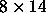

Next:
3D-Display Window
Up:
3D-Control Panel
Previous:
Reset Button
Freeze Button
The

button keeps the network from being redrawn.
Niels.Mache@informatik.uni-stuttgart.de
Tue Nov 28 10:30:44 MET 1995